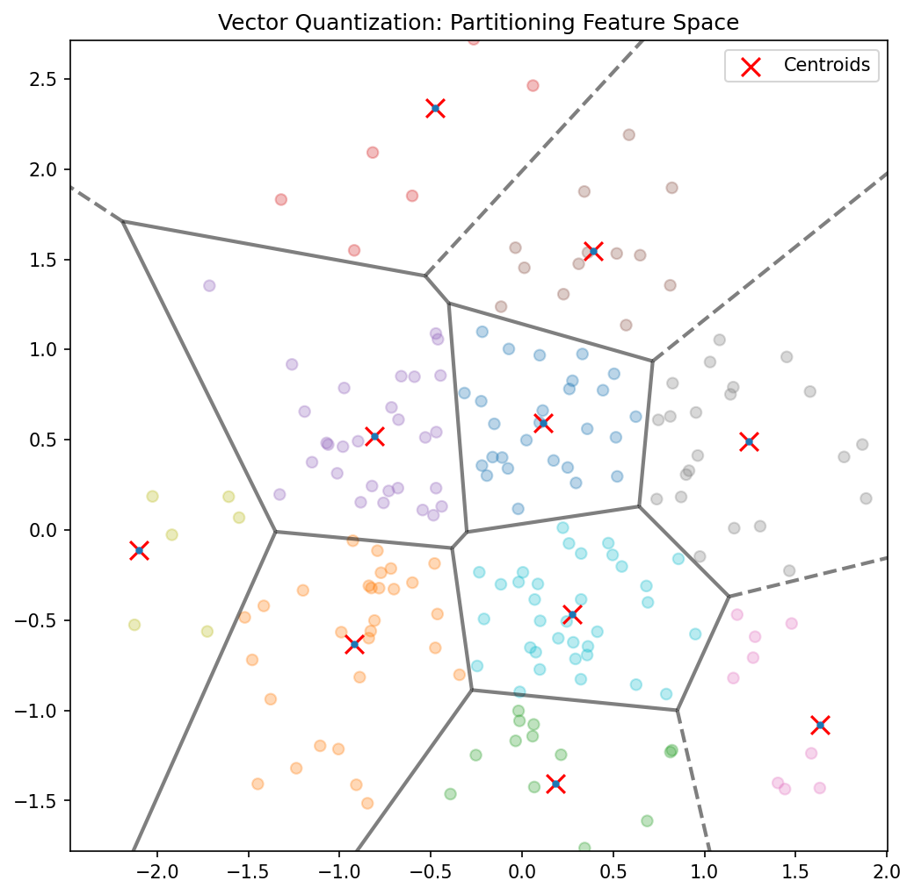

Mathematical Foundations of AI & ML
Unit 11: Unsupervised Learning
Title + Unit 11 positioning
- Units 9–10 explored learned representations and latent spaces.
- Unit 11: discovering structure in data without labels — the unsupervised paradigm.
- Core algorithms: K-Means clustering, Gaussian Mixture Models, and the EM algorithm.
Learning outcomes for Unit 11
By the end of this lecture, students can:
- state the K-Means objective and derive the assignment-update algorithm,
- formulate a GMM as a latent variable model,
- derive the E-step and M-step of EM for GMMs,
- explain why EM maximizes a lower bound on the log-likelihood.
Supervised vs unsupervised learning
Supervised
- Given input-output pairs \((\mathbf{x}_i, y_i)\)
- Learn the mapping \(f: X \to Y\)
- Direct teacher signal (labels)
- Goal: prediction/regression
Unsupervised
- Given inputs \(\mathbf{x}_i\) only
- Discover hidden structure
- No teacher signal
- Goal: pattern discovery
- Unsupervised learning is often a preprocessing step for supervised tasks.
Why unsupervised learning matters in engineering
- Labels are expensive: destructive testing (tensile strength), expert annotation (micrographs).
- Labels are unavailable: real-time sensor streams, exploratory data analysis.
- Labels are undefined: the goal is to discover unknown groupings or regimes.
- Unsupervised methods extract value from the vast amounts of unlabeled data in engineering.
Types of unsupervised learning
- Clustering: partition data into groups (K-Means, GMM).
- Density estimation: model the data distribution \(p(\mathbf{x})\).
- Dimensionality reduction: PCA, autoencoders (Units 2, 9–10).
- Generative models: learn to generate new samples similar to the data.
- Today: focus on clustering and density estimation via mixture models.
Clustering: the core task
- Partition \(N\) data points into \(K\) groups such that:
- Within-group similarity is high (compact clusters).
- Between-group similarity is low (separated clusters).
- The number of clusters \(K\) is typically a hyperparameter that must be chosen.
What defines a “good” cluster?
- Compact: low within-cluster variance.
- Separated: high distance between cluster centers.
- Interpretable: clusters correspond to meaningful categories.
- Different clustering objectives can produce different partitions of the same data.
Roadmap of today’s 90 min
- 10–25 min: K-Means algorithm — objective, convergence, initialization.
- 25–40 min: From hard to soft — GMM as probabilistic clustering.
- 40–55 min: EM algorithm — E-step, M-step, derivation.
- 55–70 min: Lower bound maximization and convergence guarantee.
- 70–80 min: Variants (K-Medoids, Bernoulli mixtures, model selection).
- 80–88 min: Engineering applications.
K-Means objective
- Minimize the total within-cluster sum of squared distances (distortion):
\[ J = \sum_{k=1}^{K} \sum_{i \in C_k} \|\mathbf{x}_i - \boldsymbol{\mu}_k\|^2 \]
- \(C_k\): set of points assigned to cluster \(k\). \(\boldsymbol{\mu}_k\): centroid of cluster \(k\).
- This is an NP-hard optimization problem — K-Means finds a local minimum [@neuer2024machine].
K-Means algorithm: two alternating steps
Assignment step: assign each point to the nearest centroid: \[ c_i = \arg\min_k \|\mathbf{x}_i - \boldsymbol{\mu}_k\|^2 \]
Update step: recompute centroids as the mean of assigned points: \[ \boldsymbol{\mu}_k = \frac{1}{|C_k|}\sum_{i \in C_k} \mathbf{x}_i \]
%%| fig-align: center
graph TD
A[Initialize Centroids] --> B[Assign Points to Nearest Centroid]
B --> C[Update Centroids to Mean of Assigned Points]
C --> D{Convergence?}
D -- No --> B
D -- Yes --> E[Final Clusters]- Repeat until assignments stop changing.
K-Means as coordinate descent
- The assignment step minimizes \(J\) with respect to cluster assignments (centroids fixed).
- The update step minimizes \(J\) with respect to centroids (assignments fixed).
- Each step reduces or maintains \(J\) — this is coordinate descent on the distortion cost.
- Since \(J\) is bounded below (by 0) and decreases monotonically, convergence is guaranteed.
K-Means convergence
- \(J\) decreases (or stays constant) at every step.
- There are finitely many possible assignments → algorithm must terminate.
- Convergence is to a local minimum — the result depends on initialization.
- Typical convergence: 10–50 iterations for moderate datasets [@mcclarren2021machine].
K-Means: initialization matters
- Random initialization can lead to poor local minima.
- K-Means++: choose first centroid randomly, then each subsequent centroid with probability proportional to squared distance from nearest existing centroid.
- Spreads initial centroids → much better results on average.
- Multiple restarts: run K-Means several times, keep the result with lowest \(J\).
K-Means: choosing K
- Elbow method: plot \(J\) vs \(K\). Look for the “elbow” where adding clusters gives diminishing returns.
- Silhouette score: for each point, compare within-cluster distance to nearest-neighbor-cluster distance. Average across all points.
- Domain knowledge: sometimes \(K\) is known (e.g., number of material phases).
- No universally best method — combine quantitative and qualitative assessment.
K-Means: limitations
- Assumes spherical clusters of roughly equal size and density.
- Hard assignments: each point belongs to exactly one cluster — no uncertainty.
- Sensitive to outliers (centroids pulled toward outliers).
- Cannot represent clusters with different shapes or orientations.
- These limitations motivate probabilistic clustering with GMMs.
K-Means: worked example
- 2D data with 3 Gaussian blobs (well-separated).
- Initialize: place 3 centroids (K-Means++).
- Iteration 1: assign points → update centroids.
- Iteration 5: centroids stabilize at cluster centers. Assignments are correct.
- Total distortion \(J\) decreases from ~150 to ~45 over 5 iterations.
K-Medoids: robust variant
- Instead of centroids (means), use actual data points as cluster representatives (medoids).
- Objective: minimize sum of distances (not necessarily squared) to nearest medoid.
- Robust to outliers: the medoid is a real data point, not pulled by extreme values.
- More expensive: \(O(N^2)\) per iteration vs \(O(NK)\) for K-Means.
Checkpoint: K-Means failure mode
- Question: K-Means splits a single elongated cluster into two halves. Why?
- Answer: K-Means assumes spherical clusters. An elongated cluster has high variance along one axis — two spherical clusters fit it better under the K-Means objective.
- Fix: use GMM with full covariance matrices.
From hard to soft clustering
Hard Clustering (K-Means)
- Each point belongs to exactly one cluster.
- Membership is binary: \(\{0, 1\}\).
- No representation of uncertainty.
Soft Clustering (GMM)
- Each point has a probability of belonging to each cluster.
- Membership is continuous: \([0, 1]\).
- Naturally handles overlap and uncertainty.
- Gaussian Mixture Models provide this probabilistic framework.
Gaussian Mixture Model: definition
\[ p(\mathbf{x}) = \sum_{k=1}^{K} \pi_k \, \mathcal{N}(\mathbf{x} | \boldsymbol{\mu}_k, \boldsymbol{\Sigma}_k) \]
- \(\boldsymbol{\pi}\): mixing coefficients (prior probability of cluster \(k\), \(\sum_k \pi_k = 1\)).
- \(\boldsymbol{\mu}_k\): mean of component \(k\).
- \(\boldsymbol{\Sigma}_k\): covariance of component \(k\) — allows elliptical clusters [@murphy2012machine].
GMM as a latent variable model
- Introduce a latent indicator \(z_i \in \{1, \dots, K\}\) for each data point:
- \(p(z_i = k) = \pi_k\) (prior on cluster membership).
- \(p(\mathbf{x}_i | z_i = k) = \mathcal{N}(\mathbf{x}_i | \boldsymbol{\mu}_k, \boldsymbol{\Sigma}_k)\).
- Marginalizing over \(z\) recovers the mixture: \(p(\mathbf{x}_i) = \sum_k \pi_k \mathcal{N}(\mathbf{x}_i | \boldsymbol{\mu}_k, \boldsymbol{\Sigma}_k)\).
Responsibilities: soft assignments
- The responsibility of cluster \(k\) for point \(i\) is the posterior:
\[ r_{ik} = p(z_i = k | \mathbf{x}_i) = \frac{\pi_k \, \mathcal{N}(\mathbf{x}_i | \boldsymbol{\mu}_k, \boldsymbol{\Sigma}_k)}{\sum_j \pi_j \, \mathcal{N}(\mathbf{x}_i | \boldsymbol{\mu}_j, \boldsymbol{\Sigma}_j)} \]
- \(r_{ik} \in [0, 1]\) and \(\sum_k r_{ik} = 1\) for each point \(i\).
- Responsibilities are the soft analogue of K-Means hard assignments.
The log-likelihood for GMMs
\[ \ell(\theta) = \sum_{i=1}^{N} \log \left[ \sum_{k=1}^{K} \pi_k \, \mathcal{N}(\mathbf{x}_i | \boldsymbol{\mu}_k, \boldsymbol{\Sigma}_k) \right] \]
- The sum inside the log makes direct optimization intractable.
- Setting derivatives to zero does not yield closed-form solutions.
- This motivates the EM algorithm as an iterative approach.
Why MLE is hard for mixtures
- The log of a sum cannot be decomposed into a sum of logs.
- The parameters \(\boldsymbol{\mu}_k, \boldsymbol{\Sigma}_k, \boldsymbol{\pi}\) are coupled through the responsibilities.
- Direct gradient-based optimization is possible but EM is more elegant and interpretable.
- EM decomposes the problem into tractable sub-problems.
The EM algorithm: overview
- Expectation-Maximization (Dempster, Laird & Rubin, 1977).
- A general algorithm for MLE in latent variable models.
- Two alternating steps:
- E-step: compute expected values of latent variables (responsibilities).
- M-step: maximize expected complete-data log-likelihood.
E-step: compute responsibilities
- Given current parameters \(\theta^{(t)} = \{\boldsymbol{\mu}_k, \boldsymbol{\Sigma}_k, \boldsymbol{\pi}^{(t)}\}\):
\[ r_{ik}^{(t)} = \frac{\pi_k^{(t)} \, \mathcal{N}(\mathbf{x}_i | \boldsymbol{\mu}_k^{(t)}, \boldsymbol{\Sigma}_k^{(t)})}{\sum_j \pi_j^{(t)} \, \mathcal{N}(\mathbf{x}_i | \boldsymbol{\mu}_j^{(t)}, \boldsymbol{\Sigma}_j^{(t)})} \]
- “Given the current model, how much does cluster \(k\) explain point \(i\)?”
M-step: update parameters
- Given responsibilities \(r_{ik}^{(t)}\), update parameters:
\[ N_k = \sum_{i=1}^{N} r_{ik}, \quad \boldsymbol{\mu}_k = \frac{1}{N_k}\sum_{i=1}^{N} r_{ik} \mathbf{x}_i \]
\[ \boldsymbol{\Sigma}_k = \frac{1}{N_k}\sum_{i=1}^{N} r_{ik} (\mathbf{x}_i - \boldsymbol{\mu}_k)(\mathbf{x}_i - \boldsymbol{\mu}_k)^\top, \quad \pi_k = \frac{N_k}{N} \]
- These are weighted versions of the sample statistics [@murphy2012machine].
EM algorithm: pseudocode
- Initialize: set \(\boldsymbol{\mu}_k, \boldsymbol{\Sigma}_k, \boldsymbol{\pi}\) (e.g., from K-Means).
- Repeat until convergence:
- E-step: compute responsibilities \(r_{ik}\) for all \(i, k\).
- M-step: update \(\boldsymbol{\mu}_k, \boldsymbol{\Sigma}_k, \boldsymbol{\pi}\) using weighted statistics.
- Compute log-likelihood \(\ell(\theta)\).
- Stop when \(\ell(\theta)\) changes by less than a threshold \(\epsilon\).
EM convergence
- Theorem: the log-likelihood \(\ell(\theta^{(t)})\) is non-decreasing: \(\ell(\theta^{(t+1)}) \geq \ell(\theta^{(t)})\).
- Convergence to a local maximum is guaranteed (not necessarily global).
- Rate of convergence depends on the “overlap” between components.
- Multiple restarts help find better local maxima.
The lower bound perspective
- EM can be understood as maximizing a lower bound on \(\ell(\theta)\).
- For any distribution \(q(z)\) over latent variables:
\[ \ell(\theta) \geq \sum_i \sum_k q(z_i = k) \log \frac{p(\mathbf{x}_i, z_i = k | \theta)}{q(z_i = k)} \]
- E-step: choose \(q = p(z|\mathbf{x}, \theta)\) to tighten the bound.
- M-step: maximize the bound w.r.t. \(\theta\) [@bishop2006pattern].
Jensen’s inequality and the auxiliary function
- Jensen’s inequality: \(\log \mathbb{E}[X] \geq \mathbb{E}[\log X]\) for concave \(\log\).
- The auxiliary function \(Q(\theta | \theta^{(t)}) = \mathbb{E}_{z|\mathbf{x},\theta^{(t)}}[\log p(\mathbf{x}, z | \theta)]\).
- M-step: \(\theta^{(t+1)} = \arg\max_\theta Q(\theta | \theta^{(t)})\).
- This guarantees \(\ell(\theta^{(t+1)}) \geq \ell(\theta^{(t)})\).
K-Means as a special case of EM
- Set all \(\boldsymbol{\Sigma}_k = \sigma^2 \mathbf{I}\) (isotropic, equal covariance).
- As \(\sigma \to 0\): responsibilities become hard (\(r_{ik} \to 0\) or \(1\)).
- E-step becomes the assignment step; M-step becomes the centroid update.
- K-Means is EM for a GMM with isotropic covariances in the zero-temperature limit.
GMM: worked example
- 2D data from 2 overlapping Gaussians (different means and covariances).
- Initialize from K-Means.
- E-step: points near boundaries get \(r_{ik} \approx 0.5\) (uncertain assignment).
- M-step: update means, covariances, mixing coefficients.
- After 10 iterations: log-likelihood converges; elliptical clusters correctly identified.
Checkpoint: EM understanding
- Question: After the E-step, what do the responsibilities tell you?
- Answer: The posterior probability of each cluster \(k\) given each data point \(\mathbf{x}_i\), under the current model parameters. They quantify how much each cluster “explains” each point.
Bernoulli mixture models
- For binary data (e.g., presence/absence of features):
- Replace Gaussian with Bernoulli likelihood: \(p(\mathbf{x} | z = k) = \prod_j \mu_{kj}^{x_j}(1-\mu_{kj})^{1-x_j}\).
- EM updates: \(\mu_{kj} = \frac{\sum_i r_{ik} x_{ij}}{N_k}\) (weighted mean of binary features per cluster).
- Application: document clustering, genetic data analysis.
Model selection: choosing K
- BIC (Bayesian Information Criterion):
\[ \text{BIC} = \ell(\hat{\theta}) - \frac{K_{\text{params}}}{2}\log N \]
- AIC (Akaike Information Criterion):
\[ \text{AIC} = \ell(\hat{\theta}) - K_{\text{params}} \]
- Select \(K\) that maximizes BIC (or minimizes −BIC). Lower penalty = more components allowed.
BIC vs AIC
- BIC: stronger penalty for complexity (\(\log N / 2\) per parameter). Preferred for large \(N\).
- AIC: weaker penalty (1 per parameter). More permissive — tends to select larger \(K\).
- BIC is consistent (selects true \(K\) as \(N \to \infty\)). AIC is not.
- In practice: compare both and use domain knowledge to adjudicate.
Initialization strategies for EM
- Random: fast but unreliable — can converge to poor local maxima.
- K-Means: run K-Means first, use resulting centroids as initial means. Most common.
- Multiple restarts: run EM several times with different initializations, keep best log-likelihood.
- Good initialization is critical for EM convergence quality.
Singular covariance matrices
- If a cluster collapses to a single point, \(\boldsymbol{\Sigma}_k\) becomes singular (determinant = 0).
- The likelihood goes to infinity — a pathological solution.
- Fix: add a small diagonal regularization \(\boldsymbol{\Sigma}_k + \epsilon \mathbf{I}\).
- Alternative: constrain covariance matrices to be diagonal or shared across clusters.
Checkpoint: model selection
- Question: BIC selects \(K=3\) but you know there are 5 distinct groups. What might be wrong?
- Answer: The groups may significantly overlap, making them statistically indistinguishable. BIC prefers parsimony — 3 components may fit the data nearly as well as 5.
Application: image segmentation
- Model pixel colors (RGB) as a GMM with \(K\) components.
- Each component corresponds to a material or region (background, grain, defect).
- Segment the image by assigning each pixel to its most probable cluster.
- Soft assignments provide uncertainty at boundaries.

Application: vector quantization
- Replace each data point with its nearest centroid from a learned codebook.
- Used for signal compression: store cluster index instead of full data.
- Materials application: fingerprint alloy microstructures by their cluster assignments.
- Compression ratio = \(\log_2(\text{codebook size})\) bits per data point.

Application: regime identification in manufacturing
- Cluster sensor data over time; each cluster represents an operating regime.
- Transitions between clusters indicate regime changes (startup, steady state, degradation).
- Real-time clustering enables automated process monitoring and control.

Application: anomaly detection via density
- Fit a GMM to normal operating data.
- For a new observation, compute \(p(\mathbf{x}_{\text{new}})\) under the GMM.
- Low density \(\to\) anomaly.
- This provides a principled, probabilistic anomaly score (unlike ad-hoc thresholds).
Clustering vs autoencoder embeddings
- Clustering operates in the original data space — affected by curse of dimensionality.
- Autoencoders provide a learned latent space where clustering may work better.
- Best of both: train autoencoder (Unit 9), then cluster in latent space.
- The latent space concentrates relevant variation, making cluster separation clearer.
Materials example: alloy phase identification
- Input: X-ray diffraction (XRD) patterns from unknown alloy samples.
- GMM clustering identifies distinct peak patterns → crystallographic phases.
- No prior labeling needed — the algorithm discovers phases from data.
- Responsibilities indicate mixed-phase samples (points between clusters).
Lecture-essential vs exercise content split
- Lecture: K-Means objective, GMM formulation, EM derivation, lower bound, model selection.
- Exercise: K-Means from scratch, EM for 2-component GMM, log-likelihood tracking, hard vs soft comparison.
Exercise setup summary
- Implement K-Means in NumPy on 2D synthetic Gaussian clusters.
- Implement EM for a 2-component GMM: responsibilities, parameter updates, log-likelihood.
- Compare K-Means hard assignments vs GMM soft assignments on overlapping clusters.
- Bonus: cluster autoencoder embeddings from Unit 10 and compare.
Exam-aligned summary: 10 must-know statements
- K-Means minimizes within-cluster sum of squared distances.
- K-Means alternates between assignment and update steps (coordinate descent).
- A GMM models data as a weighted sum of Gaussian components.
- Responsibilities are posterior probabilities of cluster membership.
- The E-step computes responsibilities; the M-step updates parameters.
- EM monotonically increases the log-likelihood (convergence to local max).
- EM maximizes a lower bound on the observed-data log-likelihood.
- K-Means is a limiting case of EM with isotropic covariances and hard assignments.
- BIC/AIC balance model fit against complexity for choosing \(K\).
- GMM-based density estimation enables principled anomaly detection.
References + reading assignment for next unit
- Required reading before Unit 12:
- Murphy: Ch. 11.1–11.5
- Neuer: Ch. 5.3
- Optional depth:
- McClarren: Ch. 4.3 (K-Means)
- Bishop: Ch. 9.2–9.4 (GMM and EM)
- Next unit: Uncertainty in Predictions — Bayesian predictive distributions and Gaussian Processes.